(aus Babybody, Brautschleier, Hemd, etc. wird zb. Zierpolster, Vasenhülle, Körbchen
(z. B. Handy-Etui, Fensterabdichtung für Klimageräte, Polsterbezüge etc.)
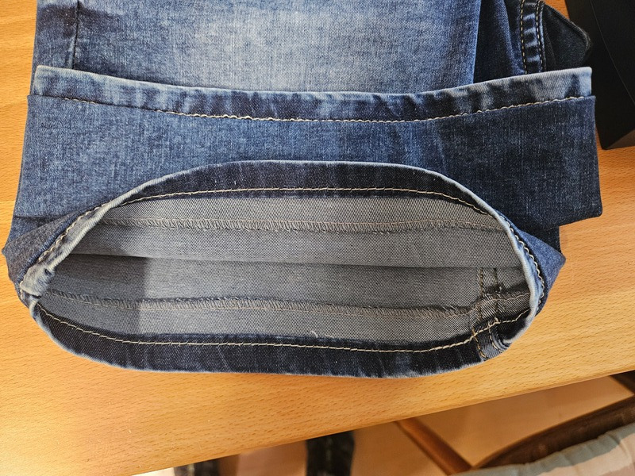
mit Originalsaum oder neuem Saum
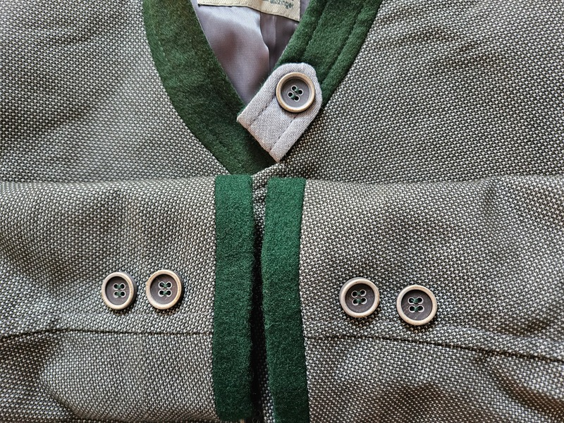
mit Originalsaum oder neuem Saum
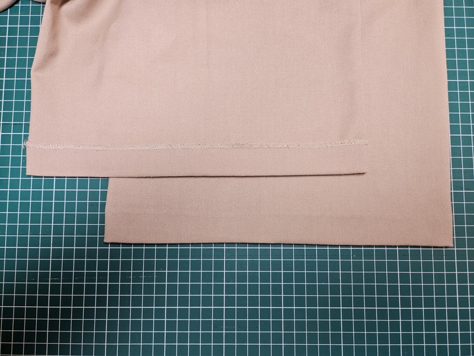
mit Originalsaum oder neuem Saum
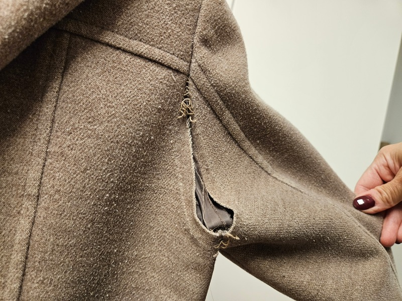
mit Originalsaum oder neuem Saum
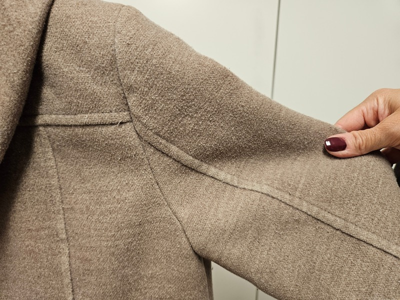
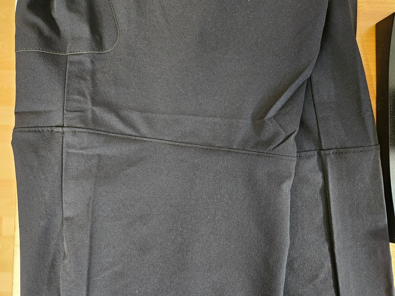
mit Originalsaum oder neuem Saum
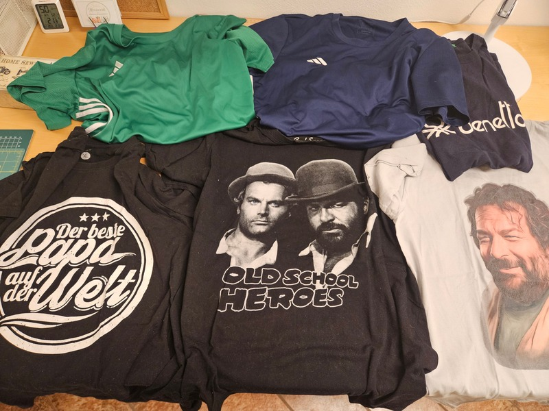
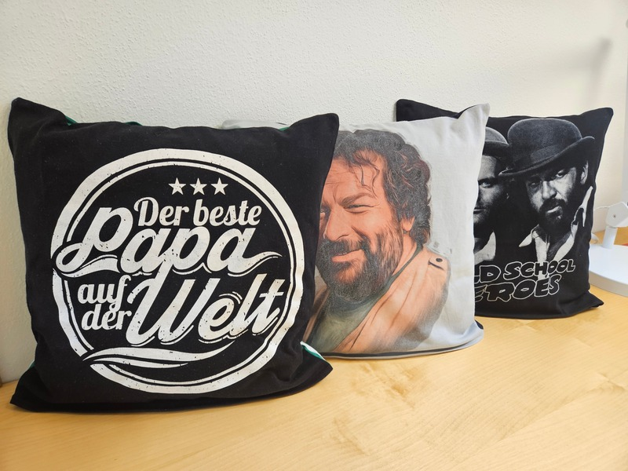
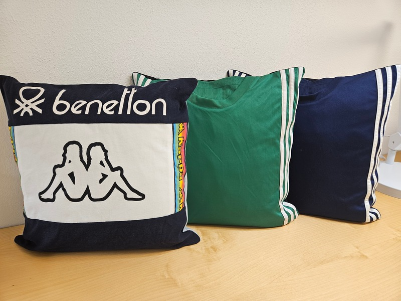
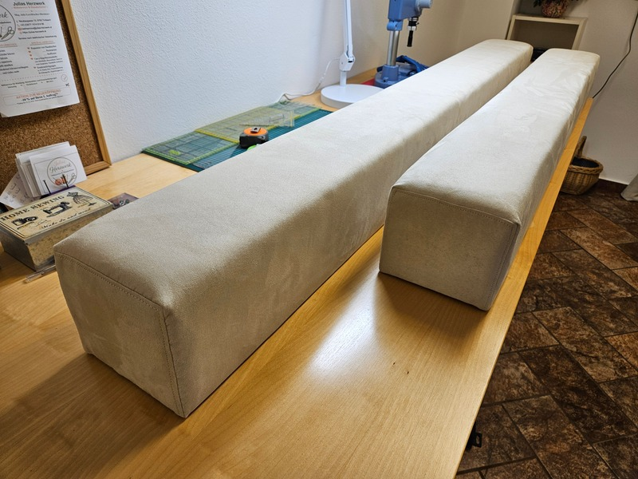
z.B. mit Alcantara-Imitat
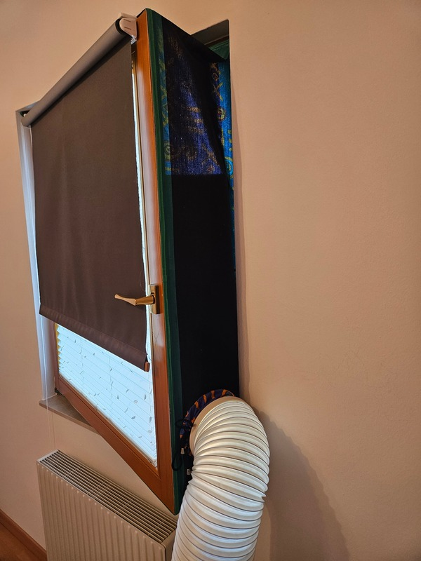
individuell erstellbar